Gallery
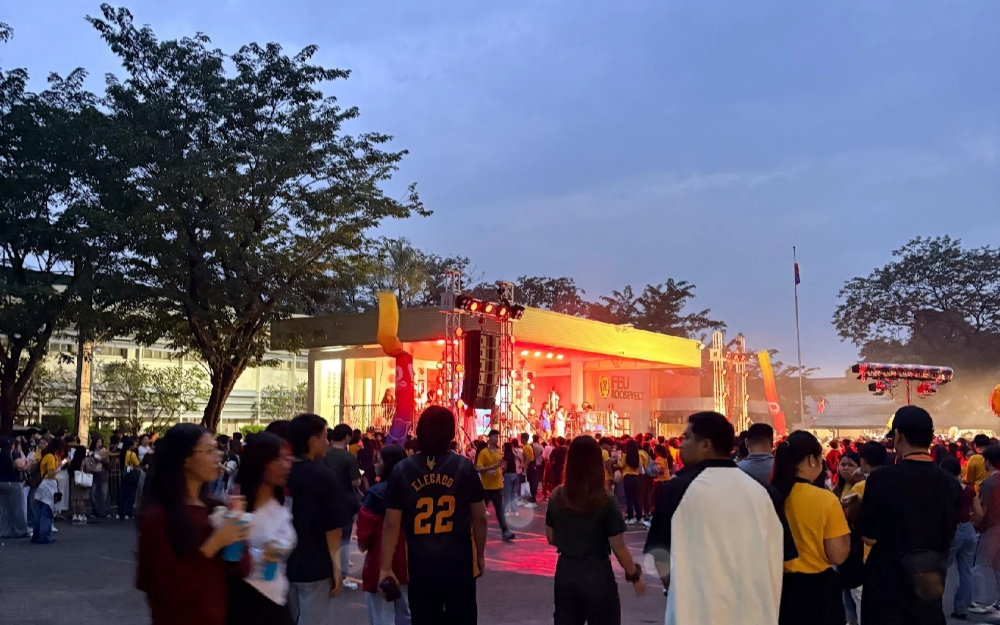
 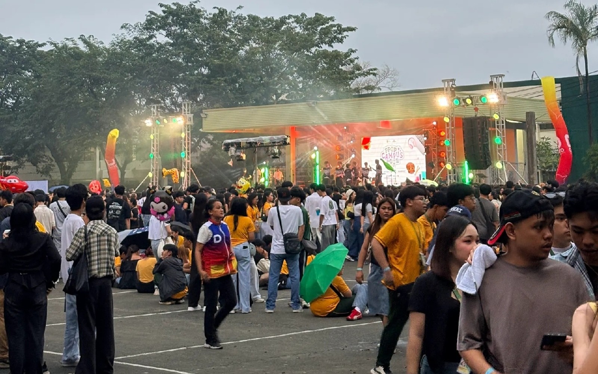
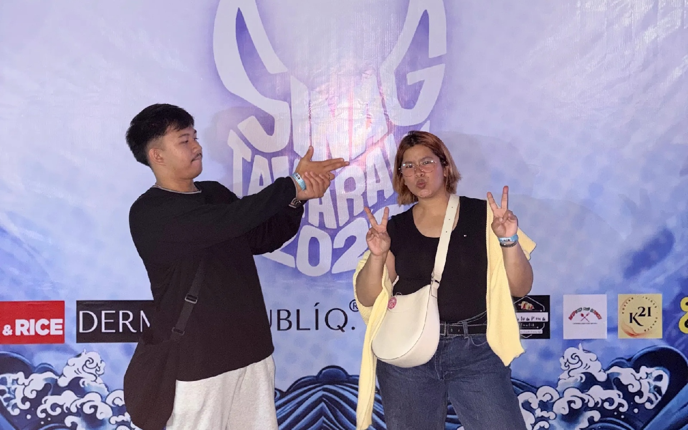
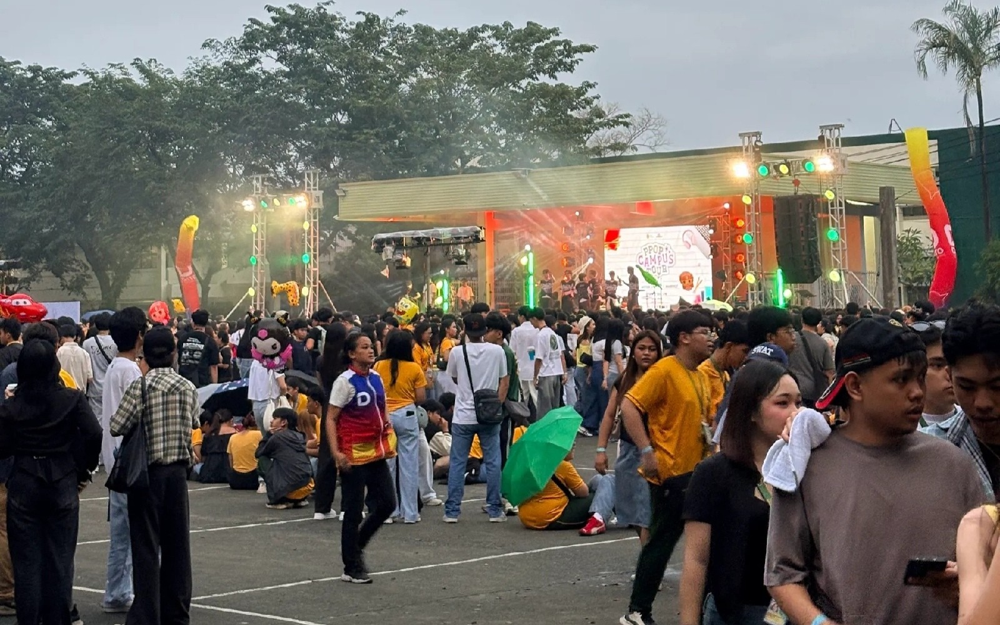
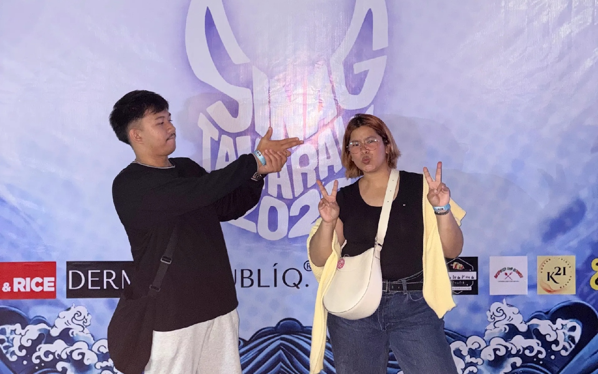
 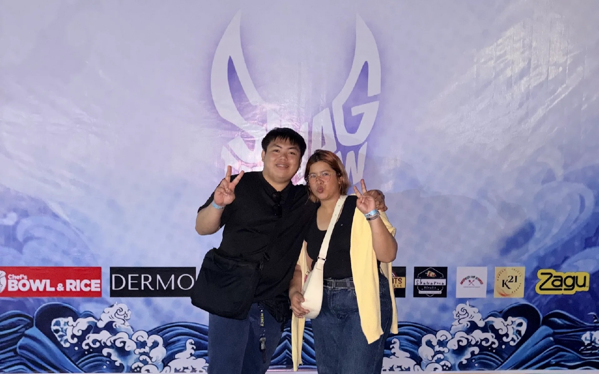
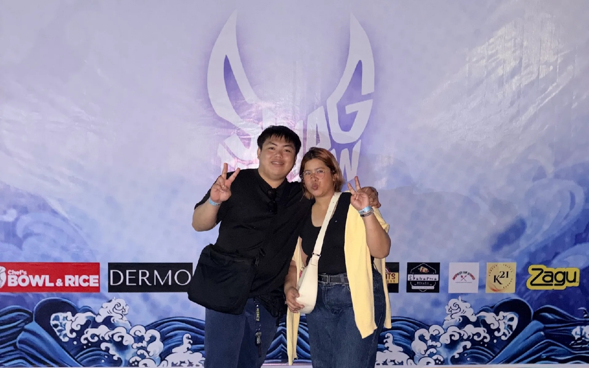
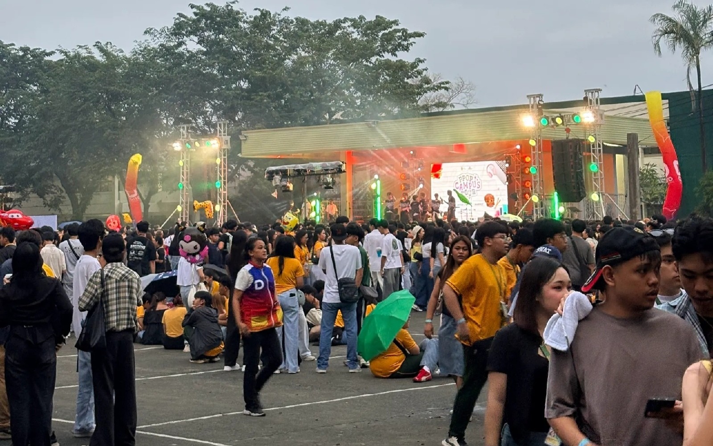
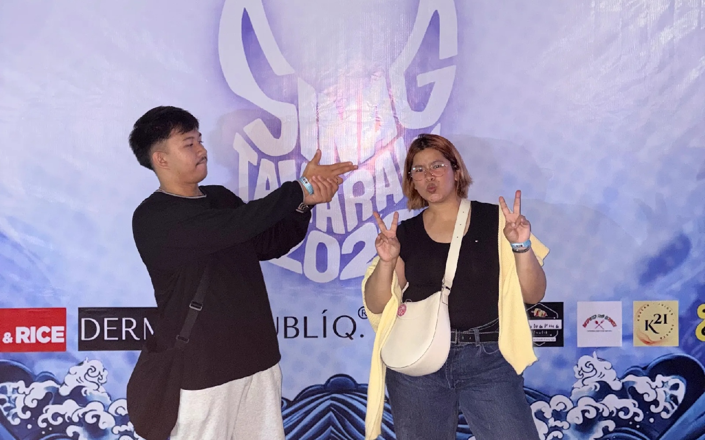
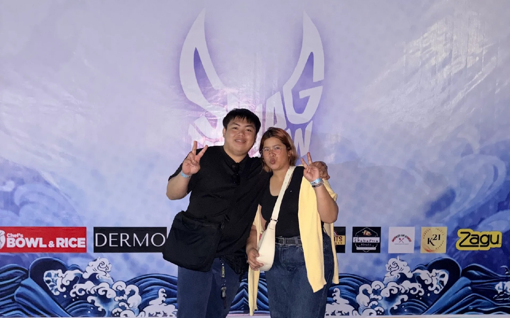
FEU Roosevelt Marikina School Events & Activities
The Sinag Tamaraw Concert is a celebration of music, talent, and community spirit among the Tamaraw family. This electrifying event brings together students, faculty, and local artists for an unforgettable night of performances that showcase the creativity and passion of the FEU community.
Gracenote lit up our FEU campus with their electrifying performance — blending pop, rock, and heartfelt energy that had everyone singing along and waving their hands in unison.
Lola Amour brought good vibes and crowd-favorite hits to life, turning the campus grounds into a mini concert scene filled with laughter, music, and Tamaraw pride.
Hey June! delivered an unforgettable live performance during their FEU campus stop — their soulful vocals and indie sound created a chill, feel-good atmosphere that everyone enjoyed.
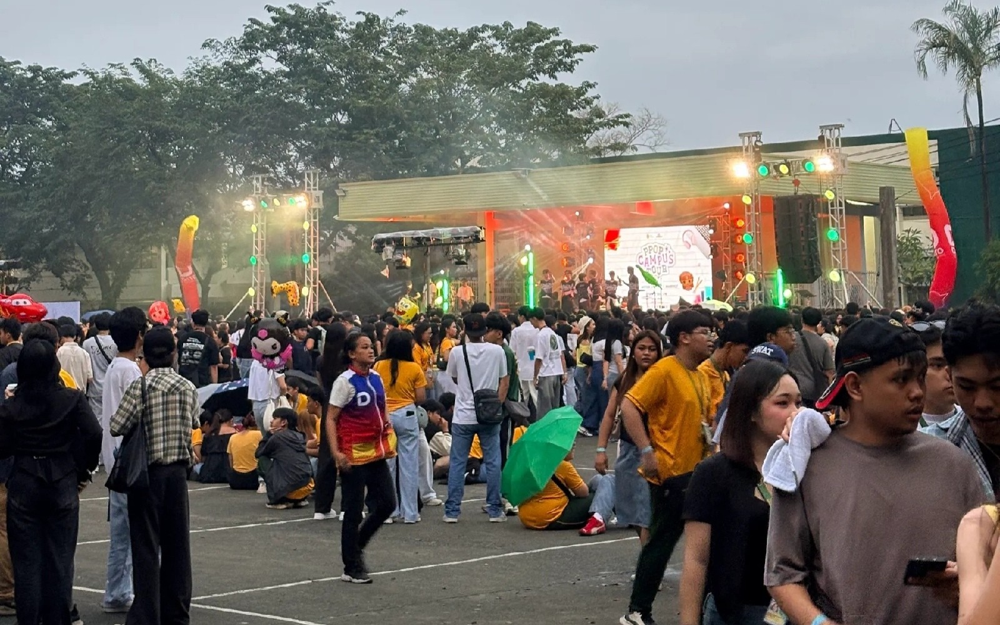
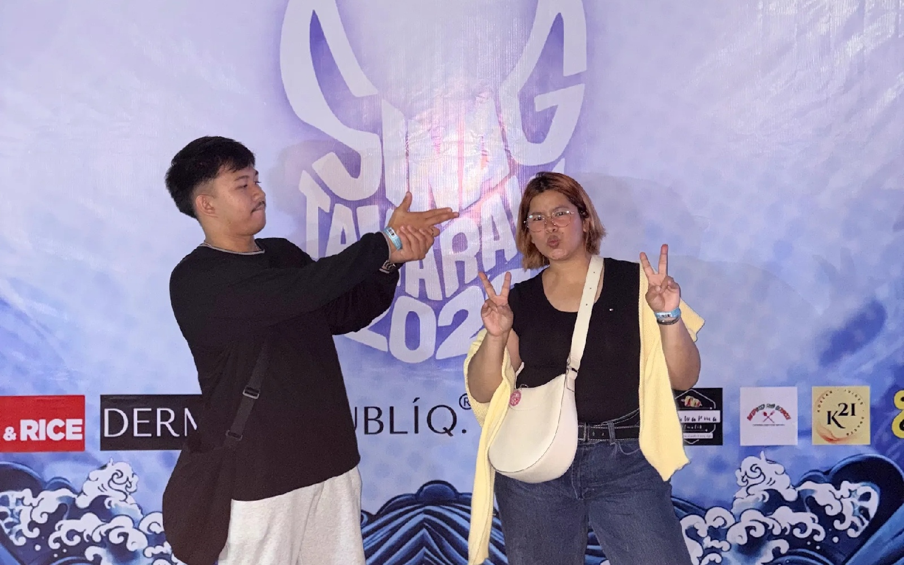
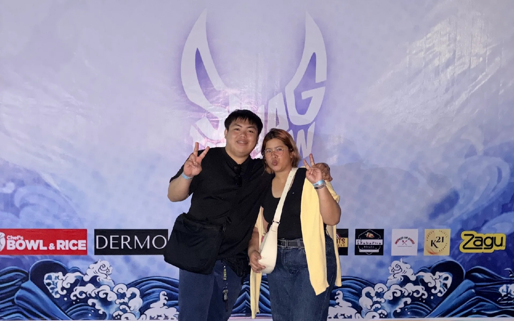